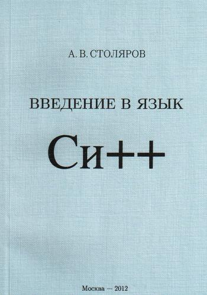

Введение в язык Си++
127 страниц.
Книга, выпущенная под свободной лицензией. Лицензия нестандартная, и полностью прописана на сайте автора (http://www.stolyarov.info/license.html).

Аннотация
Краткое введение в язык Си++. Объём третьего издания — 127 страниц. Содержание построено по принципу плавного перехода от средств чистого Си: в начале даётся определение ООП как парадигмы, основанной на обмене сообщениями, затем вводится метод для обычной открытой структуры, уже после этого рассказывается о защите и её предназначении, затем (поскольку теперь это необходимо) вводятся конструкторы и деструкторы, и т.д. Так называемая "стандартная библиотека" Си++ (известная также под названием STL) в книге не упоминается вообще, поскольку если начать изучение Си++ с STL, есть риск никогда не узнать сам язык. Для ввода-вывода в примерах используются функции библиотеки Си (printf и др.)
В третьем издании добавлены параграфы, посвящённые временными и анонимным объектам, а также сокрытию имён при наследовании; исправлены замеченные ошибки и в ряде мест даны дополнительные пояснения.